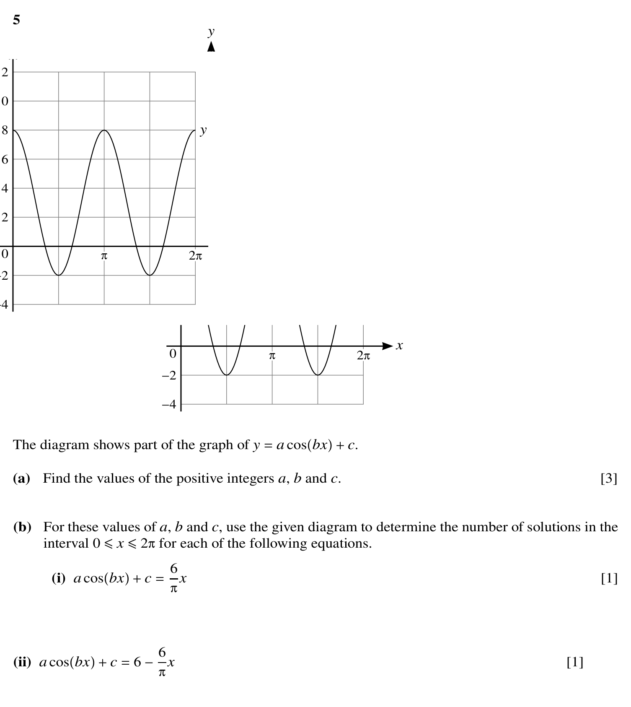
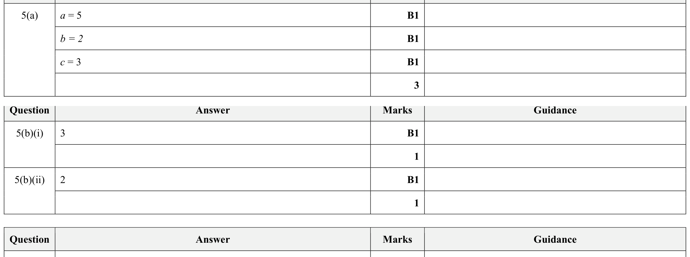

11autumn21_q05 / Q5
p1 11autumn21
question_mark_total_mismatch


- Validation
- fail
- Mapping
- fail
- Visual
- fail
- Text only
- fail
- Question crop
- high
- Mark crop
- high
- Q total
- 1
- MS total
- 5
- Paper total
- 75
- Mapping reason
- question_mark_total_mismatch
- Question image
- p1/11autumn21/questions/q05.png
- Mark image
- p1/11autumn21/mark_scheme/q05.png
- Source PDF
- input/question_papers/9709 Mathematics November 2021 Question paper 11.pdf
Validation flags
question_mark_total_mismatch
Visual flags
contains_equation_layoutcontains_graph_or_diagram_promptcontains_inequality_or_region_promptcontains_trig_expression
Review flags
crop_split_prompt_regionsduplicate_visual_fragment_excludedduplicate_visual_regions_removedexcluded_boilerplate_copyright_footerfigure_overlap_preservedfigure_region_separatedmarkscheme_image_stitchedpage_diagram_union_skipped_neighbor_questionpaper_total_focus_candidatequestion_mark_total_mismatchquestion_text_figure_overlap_preventedstale_crop_fragment_removedtext_crop_edge_safety_appliedtext_figure_overlap_trimmed
5 The diagram shows part of the graph of y = a cos(bx) + c. (a) Find the values of the positive integers a, b and c. [3] (b) For these values of a, b and c, use the given diagram to determine the number of solutions in the interval 0 ≤ x ≤ 2π for each of the following equations. (i) a cos(bx) + c = 6πx [1] (ii) a cos(bx) + c = 6 -6πx [1]